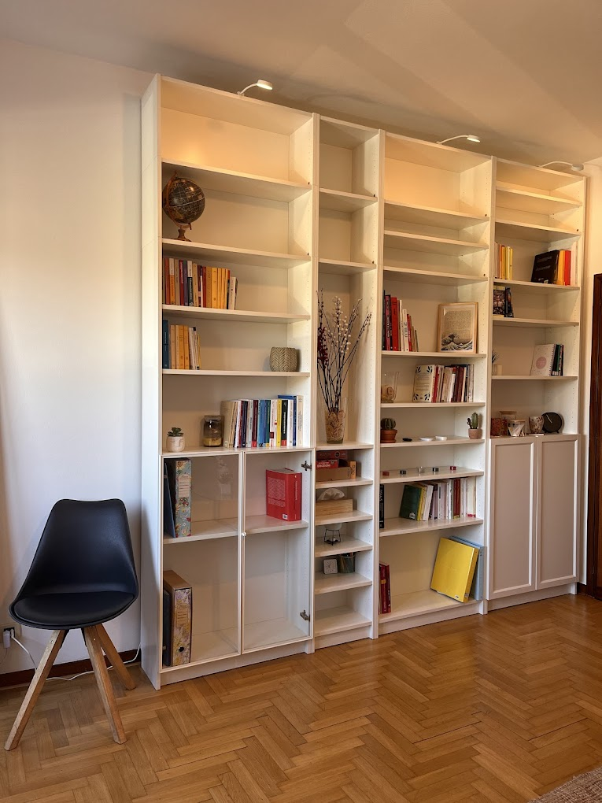

"Il terapeuta potrà portare il paziente solo fin dove lui stesso è arrivato" — C. G. Jung
Sono Lorena Ghiotto. Offro uno spazio di ascolto sicuro e non giudicante per accompagnarti attraverso le fasi della vita.

Sono Lorena Ghiotto, psicologa e psicoterapeuta. Il mio percorso nasce da una profonda curiosità verso l'essere umano e le sue risorse infinite. Dopo la laurea in Psicologia Clinica presso l'Università di Padova, ho scelto di specializzarmi in Psicoterapia Cognitivo-Comportamentale, perché credo nell'importanza di lavorare sul "qui e ora" fornendo strategie pratiche per gestire pensieri ed emozioni.
L'incontro con l'EMDR mi ha aperto nuove prospettive sulla cura del trauma, permettendomi di lavorare in profondità con chi porta ferite emotive. Nel mio studio cerco di integrare tutto questo con un approccio umano, caldo e accogliente, perché credo che la relazione terapeutica sia il primo vero strumento di cura.
Accanto alla pratica clinica, mi dedico alla mindfulness e ai laboratori esperienziali: percorsi di gruppo dedicati alla consapevolezza, al benessere e alla connessione con sé stessi e con gli altri.
La metafora delle stagioni ci aiuta a comprendere che ogni fase ha un senso.
Introspezione e riposo. Accogliamo il blocco per raccogliere energie.
Rinascita. Piantiamo i semi del cambiamento.
Pienezza. Consolidiamo le risorse e agiamo.
Raccolto. Integriamo e lasciamo andare ciò che non serve.
Scegli una data per il primo incontro conoscitivo.



Via San Giuseppe 1, Padova
Via Repoise 18/1, Padova